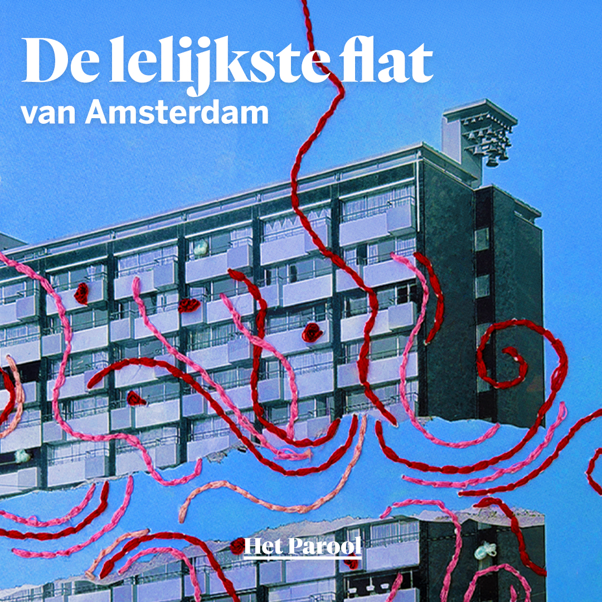

De lelijkste flat van Amsterdam
Een vijfdelige podcastserie over De Klokkenhof, haar bewoners, de krakers en de geschiedenis achter een ontspoorde wooncrisis.

Amsterdam · Journalistiek · Audio
Journalist & podcastmaker
Selected work

Een vijfdelige podcastserie over De Klokkenhof, haar bewoners, de krakers en de geschiedenis achter een ontspoorde wooncrisis.

Een tweedelige serie over wat vrijwilligerswerk jongeren kan brengen en waarom een nieuwe generatie vrijwilligers hard nodig is.
Over
Ik ben Pietro Tramontin, freelance journalist en podcastmaker uit Amsterdam. Mijn werk verscheen onder meer bij Het Parool en DPG Media.
Ik studeerde Journalistiek en Media aan de Universiteit van Amsterdam en werk aan podcasts, interviews, reportages en audiodocumentaires.
Contact